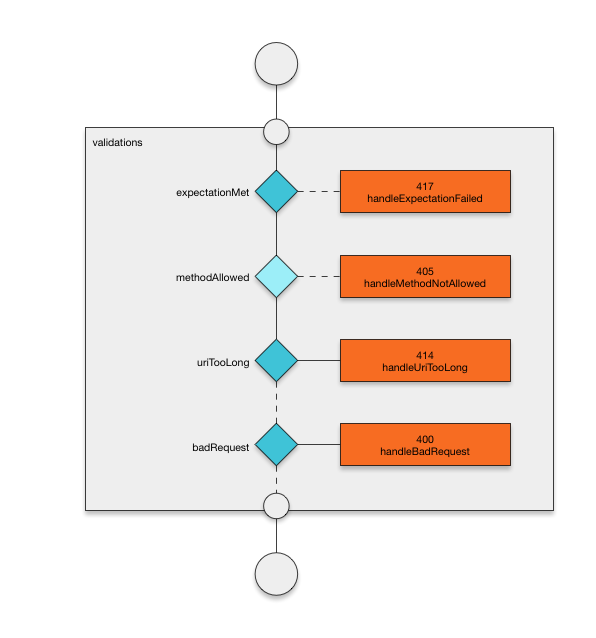

Extending F# through Computation Expressions
Ryan Riley
Prerequisites
Motivation
Examples
Seq<'T>
1: 2: 3: 4: |
|
|
Concatenating Seq<'T>
1: 2: 3: 4: 5: 6: |
|
|
Async<'T>
1: 2: 3: 4: 5: 6: 7: 8: 9: |
|
|
Patterns
Three Rings for the Elven-kings under the sky,
Seven for the Dwarf-lords in their halls of stone,
Nine for Mortal Men doomed to die,
One for the Dark Lord on his dark throne
In the Land of Mordor where the Shadows lie.
One Ring to rule them all, One Ring to find them,
One Ring to bring them all and in the darkness bind them
In the Land of Mordor where the Shadows lie.
— J.R.R. Tolkien's epigraph to The Lord of the Rings
One for the Dark Lord on his dark throne

Nine for Mortal Men doomed to die

OptionBuilder
1: 2: 3: 4: 5: |
|
OptionBuilder
1: 2: 3: 4: 5: 6: 7: 8: 9: 10: |
|
Delayed Computations
1: 2: 3: 4: 5: 6: 7: 8: 9: 10: 11: |
|
|
Why should we care?
1: 2: 3: 4: 5: 6: 7: 8: 9: |
|
Back to the One Ring ...


Monad (+more) libraries
Seven for the Dwarf-lords in their halls of stone

QueryBuilder
1: 2: 3: 4: 5: 6: |
|
|
FSharp.Control.Reactive
1: 2: 3: 4: 5: 6: |
|
|
RxQueryBuilder Select and Zip
1: 2: 3: 4: 5: 6: 7: 8: 9: 10: 11: 12: |
|
Extending Existing Builders
1: 2: 3: 4: 5: 6: 7: 8: 9: 10: 11: 12: 13: 14: 15: |
|
Async Applicative Example
Caveat emptor
1: 2: 3: 4: 5: 6: 7: 8: 9: 10: 11: |
|
1: 2: 3: 4: 5: |
|
The custom operation 'and!' refers to a method which is overloaded. The implementations of custom operations may not be overloaded.
custom operation: and! var in collection
Calls AsyncBuilder.Merge
Overloading workaround
1: 2: 3: 4: 5: 6: 7: 8: 9: 10: 11: 12: 13: 14: 15: |
|
Overloading workaround (cont)
1: 2: 3: 4: 5: 6: 7: 8: |
|
1: 2: 3: 4: 5: |
|
|
Other Limitations
Three Rings for the Elven-kings under the sky

Domain specific languages
Implementations of Common Intermediate Language (CIL):
1: 2: 3: 4: 5: 6: 7: 8: |
|
Protocols
Freya implements the HTTP state machine
1: 2: 3: 4: |
|
1: 2: 3: |
|
Session Types
1: 2: 3: 4: 5: 6: 7: 8: 9: 10: 11: 12: 13: 14: |
|
How?
Query Expressions Revisited
1: 2: 3: 4: 5: 6: 7: 8: 9: 10: 11: 12: |
|
|
Freya's Graph

